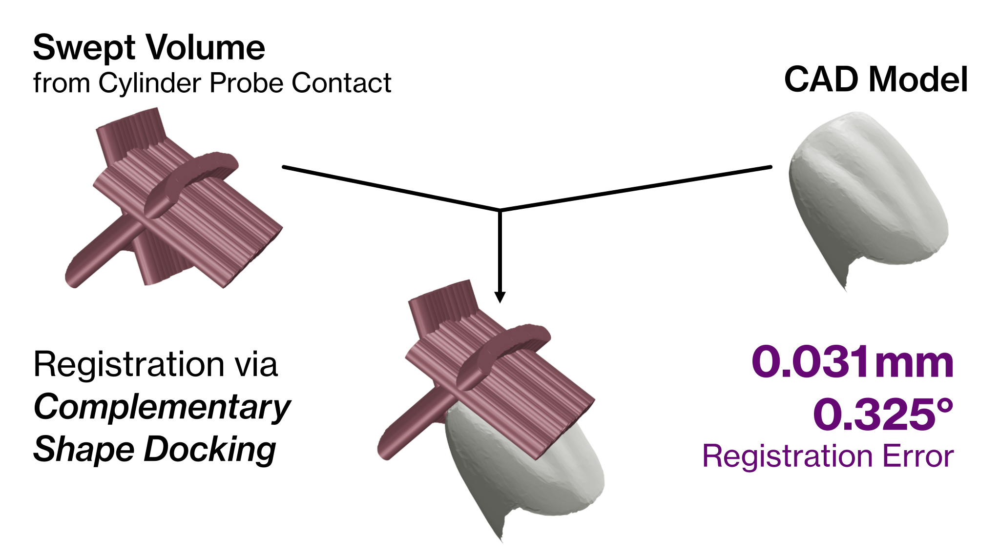

Complementary-shape Docking
Contact registration is reformulated as docking between the object model and the probe's swept volume, explicitly encoding probe geometry instead of relying on fragile point correspondences.
IEEE ICRA 2026
Probe-aware registration via complementary-shape docking


Precise alignment between a prior object model and the real scene is essential for surgical robots, precision assembly, and other manipulation tasks where small pose errors directly affect execution. Optical registration can be accurate, but it also introduces line-of-sight constraints, hand-eye calibration, marker fabrication, and mounting errors.
This work uses the robot's own contact trajectory instead. By modeling the full swept volume of a rigid probe, the method turns sparse and intermittent contact into dense geometric constraints that combine contact and free-space evidence.
Contact registration is reformulated as docking between the object model and the probe's swept volume, explicitly encoding probe geometry instead of relying on fragile point correspondences.
FFT-based translation correlation is coupled with low-discrepancy orientation sampling to search SE(3) efficiently and produce robust initial hypotheses.
A Lie-algebraic optimization with analytic contact sensitivities refines the pose continuously for metric-grade convergence.

The object and swept probe volume are voxelized, and 3D FFT correlation evaluates translations for globally sampled SO(3) orientations.
The best coarse orientation is refined inside a geodesic ball on SO(3) with a low-discrepancy GeoBall-SF sampler.
Starting from the discrete hypothesis, a bounded SE(3) optimization maximizes smooth contact proximity while penalizing penetration.
In simulation across five free-form meshes, the final refinement stage reached 0.031 mm and 0.325 deg mean error and remained stable under practical pose noise and sparse contact. On the real tooth-preparation robot, the complete registration-to-execution pipeline achieved 0.42 mm and 3.75 deg execution error while avoiding the calibration-chain failures observed with optical tracking.
The practical advantage is a calibration-free strategy that requires neither external sensors nor careful initialization, only manipulator proprioception and the known probe geometry.

Five free-form meshes with cylindrical probe sweep trajectories.

Stable registration under practical Gaussian pose noise.

Reliable results even when most trajectory points are non-contact.

Prepared tooth geometry closely follows the designed preparation.

The contact-based result avoids the optical calibration-chain failure.
@misc{chen2026swept,
title={From swept contact to pose: Probe-aware registration via complementary-shape docking},
author={Chen, Chen and Li, Yunwen and Xu, Yifan and Yan, Xiangjie and Shu, Chang and Hou, Jianxia and Song, Shiji and Li, Xiang},
year={2026},
eprint={2605.21398},
archivePrefix={arXiv},
primaryClass={cs.RO}
}